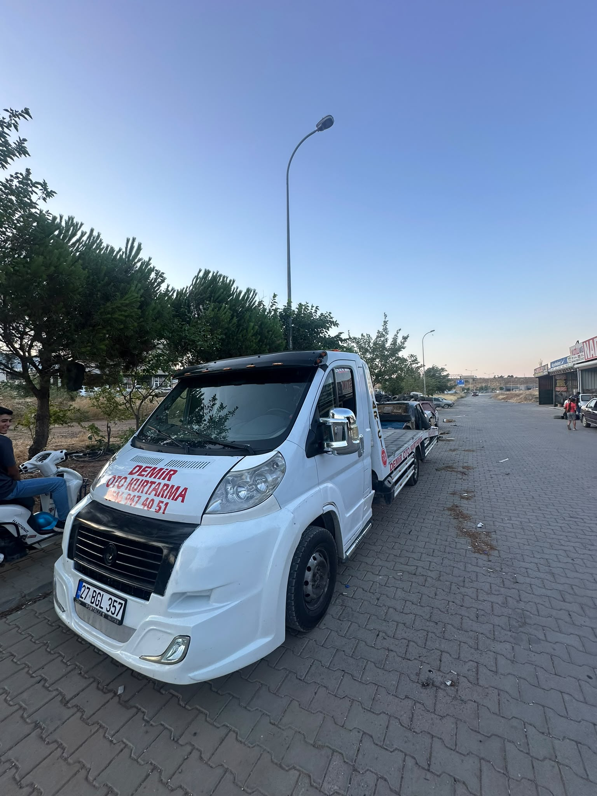
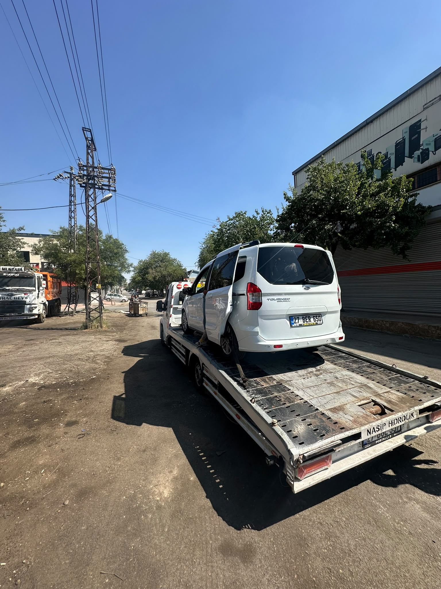
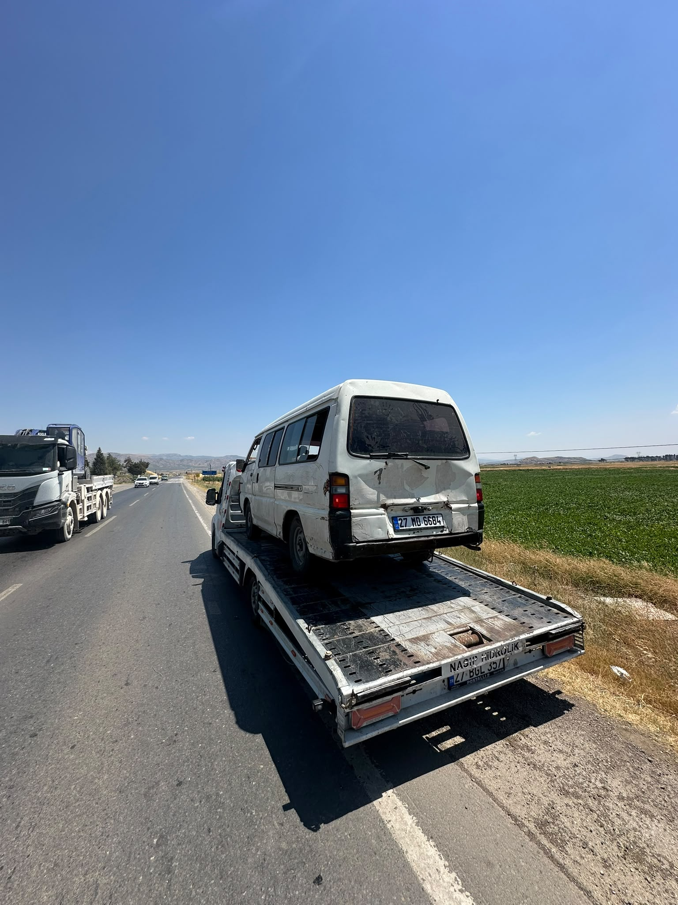
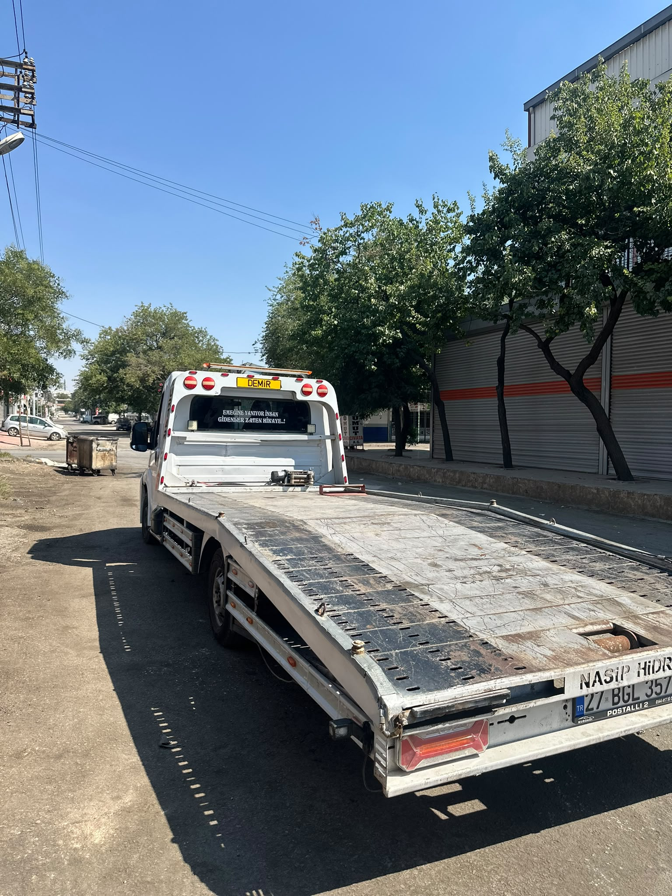
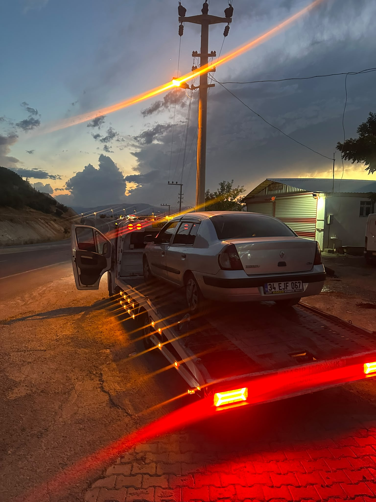
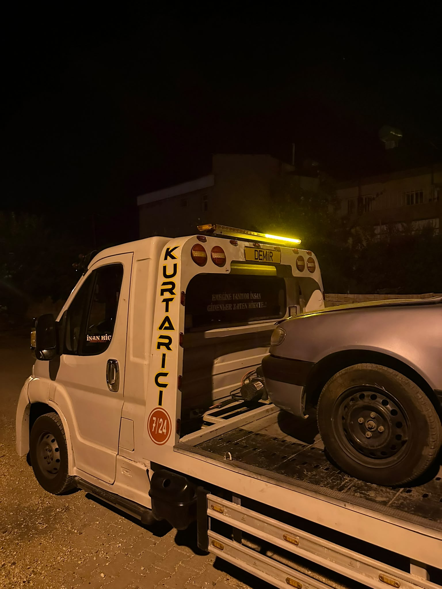
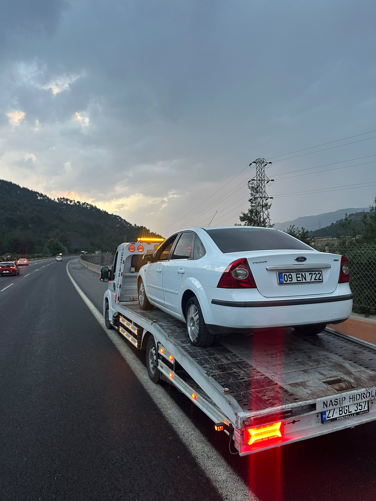

7/24 Ulaşılabilir
Haftanın her günü telefonla iletişim.
Demir Oto Kurtarma, Nurdağı ve Gaziantep bölgesinde 7 gün 24 saat hızlı, güvenilir ve profesyonel çekici hizmeti sunar.
Şu an hizmete hazırız
Konumunuzu paylaşın, en kısa sürede size ulaşalım.
Hemen ArayınHaftanın her günü telefonla iletişim.
Nurdağı ve Gaziantep çevresinde destek.
Aracı olmadan işletmeyle görüşün.
Aracın dikkatli biçimde taşınmasına odaklanır.
Araç kurtarma ve yol yardım ihtiyaçlarınız için hızlı ve güvenilir çözümler sunuyoruz.
Arızalanan veya hareket edemeyen aracınızı güvenli şekilde bulunduğu yerden alıyoruz.
Aracınızı istediğiniz servise veya belirttiğiniz adrese güvenli biçimde taşıyoruz.
Yolda yaşadığınız beklenmedik durumlarda hızlı müdahale ve çözüm desteği sağlıyoruz.
Kaza yapan araçların güvenli şekilde bulunduğu yerden kaldırılmasını sağlıyoruz.
Demir Oto Kurtarma olarak Nurdağı ve Gaziantep bölgesinde araç sahiplerinin yol yardım ve çekici ihtiyaçlarına hızlı çözümler sunuyoruz.
Önceliğimiz aracınızı güvenli şekilde taşımak, ihtiyaç anında ulaşılabilir olmak ve süreci mümkün olduğunca sorunsuz ilerletmektir.
Oto kurtarma, çekici ve araç taşıma hizmeti sunduğumuz bölgeler.
İlçe merkezi ve çevre yollarında 7/24 çekici ve yol yardım desteği.
Gaziantep merkez ve yakın güzergâhlarda araç kurtarma hizmeti.
İslahiye merkezi ve bağlantı yollarında oto kurtarma desteği.
Narlı ve çevresindeki güzergâhlarda çekici ve yol yardım hizmeti.
Bahçe ve yakın çevresinde araç taşıma ve çekici desteği.
Osmaniye yönündeki güzergâhlarda planlı çekici hizmeti.
Türkoğlu ilçe merkezi ve bağlantı yollarında oto kurtarma hizmeti.
Kahramanmaraş merkez ve çevre ilçelerde araç taşıma desteği.
Düziçi ve çevresinde yol yardım ve çekici hizmeti.
Beyoğlu Mahallesi ve yakın bölgelerde oto kurtarma desteği.
Konumunuzu bildirin; Nurdağı ve Gaziantep çevresinde en kısa sürede size ulaşalım.
Modern ekipmanlarla güvenli araç taşıma hizmeti.
Günün her saatinde ulaşabileceğiniz yol yardım desteği.
Gaziantep, Nurdağı ve çevre ilçelerde hizmet.
Araçlarınız dikkatli ve güvenli şekilde taşınır.

Demir Oto Kurtarma, genç bir girişimcinin güvenilir, hızlı ve profesyonel oto kurtarma hizmeti sunma hedefiyle kurulmuştur.
Bizim için her çağrı sadece bir hizmet değil, insanların en zor anlarında yanında olma sorumluluğudur.
Teknolojiyi yakından takip eden, müşteri memnuniyetini ön planda tutan hizmet anlayışımızla Nurdağı, Gaziantep ve çevre bölgelerde 7/24 hizmet vermeye devam ediyoruz.
Demir Oto Kurtarma'nın gerçekleştirdiği oto kurtarma ve yol yardım çalışmalarından görüntüler.





